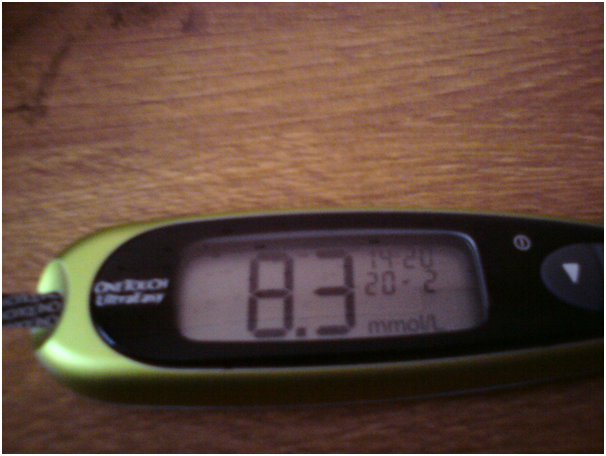
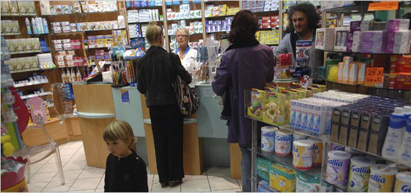
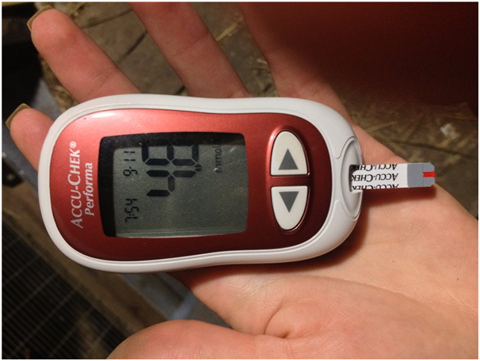
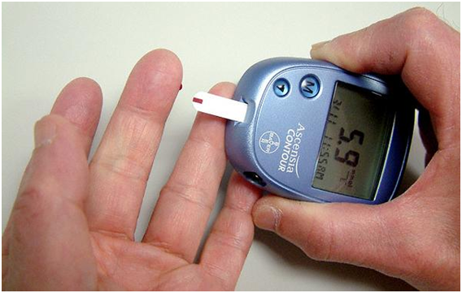
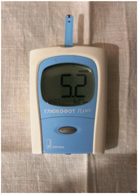
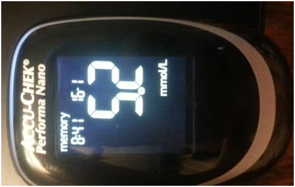
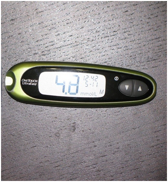

SICK BUSINESS:
Ngayon, malalaman mo ang lahat ng mga sikreto tungkol sa DIABETES na dating itinago
sa loob ng maraming taon.
Category: Useful articles para sa mga may diabetes Nai-post ni:22.06.2020 - 12:33
Kamusta kayo! Ako si Ben Perez.
Dati, hindi ako nagsusulat ng aking feedback sa Internet, pero ngayon, nagdesisyon akong gawin iyon para sa mga taong katulad ko na may diabetes. Kasi, kamakailan lamang, muntik na akong mawalan ng buhay dahil sa pagkakamali ng mga doktor.
35 ako, mayroon akong asawa at dalawang anak. Isa akong kusinero sa school cafeteria. Noong ten years ago, na-diagnose ako ng type 2 diabetes. Lagi akong napapagod ako, hindi ako makakain, napilit ko ang sarili kong kumain ng low fat at low calorie food lamang. Syempre, naka-apekto din iyon sa aking trabaho. Bukod dito, lagi kinailangan kong ma-maintain ang blood sugar level ko .
Lagi akong napapagod, hindi ako makakain at makapagtrabaho. Dagdag pa rito, kailangan kong palagi na i-monitor yung blood sugar level ko.
Ang karaniwang araw ko, nagsimula sa blood test para masukat ang blood sugar level ko. Noon, libu-libung pesos yung ginagastos ko sa paggamot ko kada buwan . Halos lahad ng sahod ko ay inubos ko lang! Grabe ito talaga! At saka, dahil sa mga kamakailang mga kaganapan ay TUMAAS na ang PRESYO ng mga tabletas sa Pilipinas.
Napilitan akong ibenta ang aking bahay at sasakyan, at manghiram ng pera sa bangko para mabayaran ang bills sa ospital at makabili ng mga gamot... Sa totoo lang, muntik akong mamatay, dahil sa mga tabletas na iyon. Lagi akong sumusuka , at saka tumaba ako ng sobra pagkatapos ng ilang buwan. Naramdaman ko na naging pasan ako sa mga kapamilya ko. Natatakot ako na mga anak ko’y magkakaroon din ng type 2 diabetes.
Akala ko hindi na lalala pa ang buhay, pero isang araw ay muntik na akong mamatay.
Bumili ako ng sapatos, tapos, nagkaroon ako ng calluses sa mga paa ko dahil doon. Tapos, nagsimula itong dumugo hanggang sa naging mga sugat na ayaw gumaling. Hindi ako nakaramdam ng sakit, pero nahihirapan akong makalakad, parang inaapoy na ang mga talampakan ko , kaya nagpacheck-up ako sa doktor. Sabi niya, malapit na magka-gangrene daw na iyon, ang ibig sabihin, - malamang MAWAWALAN AKO NG AKING PAA!!!
Nang marinig ko iyon, sobra akong natakot. Alam ko na madalas na naidudulot ng diabetes yung gangrene, pero hindi ko akalain na magkakaroon rin ako nun balang araw. Paano ba ako mabubuhay at makakapagtrabaho nang walang paa!?Nang lumabas ako ng ospital, takot ako, at saka may hawak akong bagong listahan ng sang-katutak na mga gamot na inireseta ng doktor. Mukhang nadagdagan na lang yung gastos ko sa mga gamot - iyon ang iniisip ko noon
Paano nga ba ako mabubuhay at makakapagtrabaho nang walang binti?! De votre médecin, je suis sorti avec une énorme peur pour sa vie et... la liste de médicaments encore dix mille roubles.
Nang gabing iyon, tinawagan ko ang kaibigan ko na nakatira sa Amerika sa Skype. Pinakinggan niya ako, sabi ko mayroon akong problema sa kalusugan, at wala akong sapat na pera para makabili ng mga gamot. Siya naman, sabi niya pareho na lang yung sitwasyon sa pharmaceutical market nila sa America. Mga doktor nila, nagrereseta rin ng mga gamot na sobrang mahal yung presyo na hindi masyadong nakapagpapagaling sa diabetes kundi mapinsala lang sa kalusugan. Kasi, PAG MARAMI YUNG MGA MAY SAKIT, MAS MARAMI RIN YUNG MAIBEBENTA NILANG GAMOT. Napakalaki talaga ng kita ng mga pharmaceutical companies na nagbebenta ng mga gamot na iyon. Sa tingin ko, pareho rin ang pharmaceutical market natin dito sa Pilipinas, pero hindi ito masyadong pinag-uusapan.
Et leur vente apporte un fou le revenu des sociétés pharmaceutiques. Je pense que la France dans cette affaire aussi n'est pas une exception, tous soigneusement passé sous silence.
Tinanong ko siya kung alam niya kung paano ginagamot ang diabetes sa Amerika, sabi niya na hindi na masyadong ginagamit yung mga standard na gamot doon, pabor na sila naman sa mga natural supplements. Mas epektibo daw ang mga iyon at saka hindi nakakasama sa katawan katulad ng mga pills. Halos lahat ng mga na gamot sa diabetes ay hindi na nila ginagamit dahil pinalitan nila ng isang kakaibang lunas na tinatawag na "SugaNorm" . Dito sa Pilipinas, hindi ko pa ito natagpuan, kaya hiniling ko sa kanya na bigyan niya ng link sa product na ito.
Nalaman ko na ang "SugaNorm" ay isang organic product na available bilang powder. Ang pangunahing sangkap nito ay ang inulin, na nakukuha mula sa halamang Heliánthus tuberósus. Matagal na itong ginagamit sa oriental medicine para ma-maintain ang blood sugar level. Matapos ang maraming taon ng clinical studies, napatunayan ng modern science na ang polysaccharide na ito ay mabisa sa paggamot sa type 2 diabetes. At saka yung pinakamahalaga - ang inulin at ang L-arginine nakapagpapanumbalik ng mga cells ng pancreas na lumilikha ng insulin!
Ang "SugaNorm"ay ang tanging supplement na base sa extract na ito. Sa type 2 diabetes, nakapagbabawas ito ng glucose level sa dugo, nakapagbabawas o nakapagpapawala (mahigit 20% ng mga pasyente) ng pangangailangan sa mga gamot na pambawas ng blood sugar, nagpapatibay ito ng mga blood vessels at nagre-regulate ng metabolism.
Ang "SugaNorm" ay inirerekomendang gamitin ng kasabay ng iba pang gamot sa diabetes, o bilang PANG-IWAS sa karamdamang ito kapag may panganib na magkaroon ka ng diabetes.
Nagdesisyon akong subukan ang "SugaNorm", kasi noon, walang mawawala sa akin kung susubukan ko, kaya inorder ko ito sa website ng manufacturer nito.
Kaya, tuwing umaga ay nagbuhos ako ng mainit na tubig sa baso, nagpatunaw ako ng isang kutsarita ng powder sa tubig, at tapos, ay uminom ako nito. Sa totoo lang, hindi ako naniniwala sa mga himala. Pero nagkamali ako pala... Matapos ang isang linggo, napansin kong hindi na ako napapagod, at unti-unting nagsimula akong kumain ng paborito kong pagkain. Bumalik sa normal ang blood sugar level ko (bago gamitin ang "SugaNorm", yung glucose level ko ay 9.6 bago kumain sa umaga, matapos ang dalawang linggo ng paggamit ng SugaNorm - naging 5.4 ito pagkatapos kumain) at saka gumaling ang mga sugat ko sa paa. Hindi ko pa nabanggit ang aking timbang. Nabawasan ako ng 9 pounds!
Hindi ako makapaniwala sa mga resulta ... Nahanap ko ang solusyon sa lahat ng mga problema ng mga may type 2 diabetes. Nawawala na ang pananakit, hindi na ako ninenerbyos dahil sa mga kinakain ko. Hindi na ako natatakot sa operasyon ni hindi na ako nagaalala sa insulin injections. HINDI KO NA KAILANGANG GUMASTOS SA MGA PILLS. Napagaling ko ang aking diabetes at hindi ko kinailangang bumili ng mga product ng pharmaceutical companies ni hindi ko kinailangang sundin ang mga payo ng "mga eksperto.
a Disparu de la douleur et des picotements, de l'anxiété à propos de ce que lui. J'ai vaincu le diabète de la production de fausses sociétés pharmaceutiques et des conseils soi-disant «experts».
Kailangan ko pang sabihin na ang "SugaNorm" ay mabibili sa Internet lamang, dahil hindi pinapayagan ng pharmaceutical industry natin ang pagbebenta nito sa ating bansa at sinusubukan nilang ipagbawal ang pagbebenta nito dito. Tandaan mo na ang hindi ka itinuturing na isang pasyente ng mga pharmaceutical companies, ayaw nilang magpagaling sa iyo ... Gusto lang nilang habambuhay kang bibili ng mga products nila.
Pero sa pamamagitan ng "SugaNorm" ay MAKAKATIPID ka ng DAAN-DAANG LIBONG PESOS kasi hindi mo na kailangang gumastos ng iyong pera sa libu-libong mga gamot na gawa ng mga pharmaceutical companies. Mag-ingat ka sa peke, kasi minsan, matatagpuan mo iyon sa Pilipinas. Orderin mo sa TANGING official supplier sa Pilipinas. Ginagarantiyahan nito ang kalidad ng product.
Sana matutulungan kayo ng aking kwento at makakapagligtas pa kayo sa inyong sarili. Mabuhay kayo!
Mga Komento:
Karamihan sa mga doktor, gustong kumita lang talaga! Isang kakilala kong doktor ay nagrekumenda ng gamot na ito sakin para MAIWASAN ang diabetes. Pinakamagandang gamot sa diabetes daw ngayon yung "SugaNorm". Ako naman, bago gamitin yun, 8.7 ang glucose level ko, tapos, after one month lang - naging 5.9 PAGKATAPOS KUMAIN! Ginagamit ko iyon pa rin.
Salamat at sinulat mo ang story mo dito. Kasi, halos nawalan ng pag-asa kami ni mister ko... Binasa ko na ang story mo at inorder ko sa website na ito. After two weeks lang, nagpacheck up siya - yung dating 7.9 insulin niya eh naging 4.8 na!!! 
Gusto ko ring sumulat ng aking feedback. Sa simula, akala ko’y scam lang yun. Pero tapos, naconvince ako. Isang buwan lang ginamit ko yun. Bago ko simulang gamitin, 9.8 yung insulin ko bago kumain, after one month - naging 5.9 pagkatapos kumain. Ang ganda ng buhay ko ngayon!
Hello po, ako si Judy. Wala kong diabetes. Pero ang tatay ko, 15 taon na may type 2 diabetes siya. Pwede ba ninyo akong tulungan, ano ba yung magagawa ko para sa kanya? Mahal na mahal ko ang aking ama at gusto kong mabuhay siya ng maraming taon, hindi ko lang alam kung ano yung gagawin ko kung bigla siyang... Tulungan po ninyo ako, salamat,
Subukan mo siyang painumin ng isang basong tubig na may " SugaNorm " bago siya kumain. Yung iba pang mga gamot niya, gamitin mo pa rin, at siguradong mababawasan yung blood sugar niya!
Ang tatay ko, may parehong problema, pero hindi siya nagpa-inject ng insulin kundi umiinom lang siya ng mga pills. Pero mula noong nagsimulang mamanhid yung daliri niya, sinimulan niyang sundin ang payo ng ina ko - nagda diet na siya at umiinom ng supplement na ito ...
Maganda talaga yung gamot na yun, at saka sulit yung presyo.", Dati, sobrang malaki yung utang namin dahil sa sobrang paggastos sa pagpapagamot ng aking anak. Minsan, isang katrabaho ko eh nagrekomenda ng "SugaNorm" Sa simula, hindi ako masyadong naniniwala na mabisa yun, pero sinubukan pa rin namin yun. Ngayon, malusog na aking anak. Makapaniwala ba kayo, yung dating 9,7 niyang insulin - bumaba sa 5.9 lang!
Dati, mayroon din akong type 2 diabetes. Feeling ko, pabigat lang ako sa aking pamiliya. Yung kapatid kong babae, isang doktora siya. At minsan, natagpuan niya yung website na may description ng positive effect ng "SugaNorm". Inorder namin agad itong supplement na ito, mabilis na napagaling ako nito, at ngayon, mabubuhay na ako nang normal!
Dati, nahihirapan din dahil sa type 2 diabetes ang kuya ko Pero hindi rin kami sumuko - nag-order rin ako nito para sa kanya. At natulungan siya! Dati, 9,8 yung glucose level niya pagkatapos kumain, pero ngayon - 5,3 na lang iyon BAGO SIYA KUMAIN! Heto yung link sa website kung saan ako nag-order ng "SugaNorm".
Isa akong doktor sa private clinic. Inaalok nilang magbebenta ako ng mga gamot sa mga pasyente para makakuha ng comission, pero tinanggi ko .. Ang aking ina, mayroon din siyang type 2 diabetes dati. Hanggang sa natagpuan ko na lang ang tamang lunas para sa kanya. Heto ang results: bago gamitin ang "SugaNorm" - 8.7 yung glucose level niya bago kumain. Matapos ang 3 buwan ng paggamit ng "SugaNorm" - naging 5.9 na lang. Bago gamitin yun, 9.8 yung glucose level niya pagkatapos kumain, at saka matapos ang 3 buwan ng paggamit - naging 5.2 na lang. Mukhang ayos na ang lahat at hindi na niyang kailangang uminom ng iba pa pang gamot.
Mga gago lang yung mga doktor, totoo nga pala - gusto lang nilang kumita!!!!! Bakit ba nagrereseta sila ng mga gamot na sobrang mahal ang presyo?! May generic drugs, mas mura ang mga iyon!
Sana binasa ko yung article dati… Mayroon din akong diabetes… :(
Huwag kayong sumuko! Natulungan din ako ng « SugaNorm ». Na-try ko na sa sarili ko! Inumin mo na lang tuwing umaga kapag umiinom ka ng iba pang mga gamot mo. Matutulungan ka, sigurado ako!
Paano ba ginagamit yung "SugaNorm"?
Nagbuhos lang ako ng mainit na tubig sa baso, nagpalamig ako nito ng kaunti para maging mainit-init, tapos, nilagyan ko ito ng isang kutsarita ng "SugaNorm", pinaghalo ko iyon, at tapos, uminom lang ako nito bago kumain sa umaga. Madali lang yun :)
Ako naman, ininom ko ito tuwing umaga sa halip na magkape :) Nabawasan rin yung blood sugar level ko. Noong three weeks ago - 7.6 yung insulin ko sa umaga, at ngayon - 5.2 na lang! So ganda nito talaga :)
Yung mga gumamit ng "SugaNorm", sabihin nyo, ano ba yung mga components nito?
Inorder ko to para sa akin. Heto yung mga ingredients: fibregam, inulin, citric acid, vitamin B6, B1. Sa tingin ko, nakakatulong ito, o kaya, walang mawawala sa iyo anyways.
Buti at may gamot na to! Hindi ko maintindihan kung bakit may mga bumibili ng mga gamot na sobrang mahal yung presyo sa halip ng mga mas murang gamot. Senior citizen ako, hindi na ako masyadong makagastos sa mga botika, kaya, huwag lang sundin ang lahat ng mga payo ng doktor, mayroon kang sariling utak, di ba?
Ipinakita ko yung "SugaNorm" sa isang kaibigan kong doktor, nang basahin niya yung komposisyon, sobrang nagulat siya, kasi di niya akalain na mayroon tayong gamot na katulad nun dito sa Pilipinas! Sabi niya, ang lahat ng mga components nito eh maganda talaga yung epekto sa kalusugan at saka talaga itong nakakapagbawas ng insulin level sa dugo. Itong gamot na ito, magiging mas sapat na lang daw para sa mga taong may diyabetis kaysa sa lahat ng iba pang gamot sa diabetes.
Mike, natulungan ka na ba
Two weeks lang ginamit ko yung dating 7.1 glucose level ko - naging 4,8 na lang. Kaya, sigurado na akong kailangan kong magpatuloy sa paggamit nito!!!
P.S. Gustong gusto kong malaman kung ano ang iniisip nyo tungkol sa "SugaNorm". Kung nagamit na ninyo ito, ibahagi ang iyong karanasan sa comment section sa ibaba: